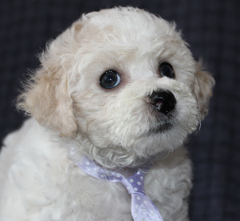
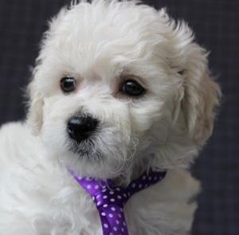

Наши щенки бишон фризе.
Помет "Б" 24.06.2011г 5 щенков(2 девочки и 3 мальчика)
отец- W-Dayl Don-West
мать- Frizzled life Ornella
1мальчик-Daryashie ulybku Berry-Bert(Вл.Жукова О.Ю г. Краснодон)
2мальчик -Daryashie ulybku Вeay-Bearus (Вл.Чубукаева И.В. г. Стаханов)
3 мальчик- Daryashie ulybku Boniface(Вл.Кравец В.Д г.Бердянск)
4 девочка- Daryashie ulybku Blonde-Bell(Вл.Винокурова Алла г.Стаханов)
5девочка- Daryashie ulybku Banny-Bliss(Вл.Томиленко В.И г. Алчевск)
Помет на "Д" 7.02.2013г 5 щенков(3 мальчика и 2 девочки)
отец Frizzled life Watson
мать Frizzled life Ornella
1мальчик-Daryashie ulybku Dream Boy (Вл. Игнатено В.В. г.Ужгород)
2мальчик- Daryashie ulybku Don Juan (вл.Кравченко Е.В. г.Норильск)
3 мальчик- Daryashie ulybku Dendy Elegant (вл.Харченко Е.Г.г.Киев)
4 девочка- Daryashie ulybku Dolce Vita (Вл.Марцонь И.В. г. Харьков)
5 девочка- Daryashie ulybku Deniza Star Вл.Швыдун Н.А. Г.Киев)
Помет "Ж" 25.07.2013г 3 щенка(2 девочки и 1 мальчик)
отец Frizzled life Watson
мать Daryashie ulybku Banny-Bliss
1мальчик- Daryashie ulybku Zhan Klod (Вл.Громницкая А. г.Киев)
2 девочка- Daryashie ulybku Zhozefina( Вл.Хиврич О.И. г.Киев)
3 девочка- Daryashie ulybku Zheneva (Вл.Кириченко Л.В. г.Киев)
Помет Z .Frizzled life Watson u Frizzled life Ornella
1 Daryashie ulybku Zeus Власова М. Запорожье
2 Daryashie ulybku Zidane Причиненко С. Симферополь
3 Daryashie ulybku Zoran Лавринович Э. Литва
4 Daryashie ulybku Zita Козак Ю. Хмельницкий
5 Daryashie ulybku Zalia Батурина Д. Ростов-на-Дону
|
|  |  |
Помет I. Camelia Bloom Vaso u Daryashie ulybku Banny-Bliss
1 Daryashie ulybku Illaria Семенихина Е. Москва
2 Daryashie ulybku Idilla Архипов А. Иваново
5.10.2014 Помет К от пары Camelia bloom Vaso и Frizzled life Ornella 1 девочка и 2 мальчика
Daryashie ulybku Candy -Ярославль
Daryashie ulybku Corey-Сумы
Daryashie ulybku Cody-Калмыкия
 |
 |
 |
Помет L пары Сamelia bloom Vaso и Daryashie ulybku Blondy-Bell родились 2 мальчика и 1 девочка
Daryashie ulybku Lady-Love Ростов-на-Дону
Daryashie ulybru Lucky-Краматорск
Daryashie ulybku Lukas-Киев

Копирование с сайта запрещено.
Copyright©2013. Все права принадлежат питомнику бишон фризе "Дарящие Улыбку"
Создание сайта www. photo-site-studio.com
|
|